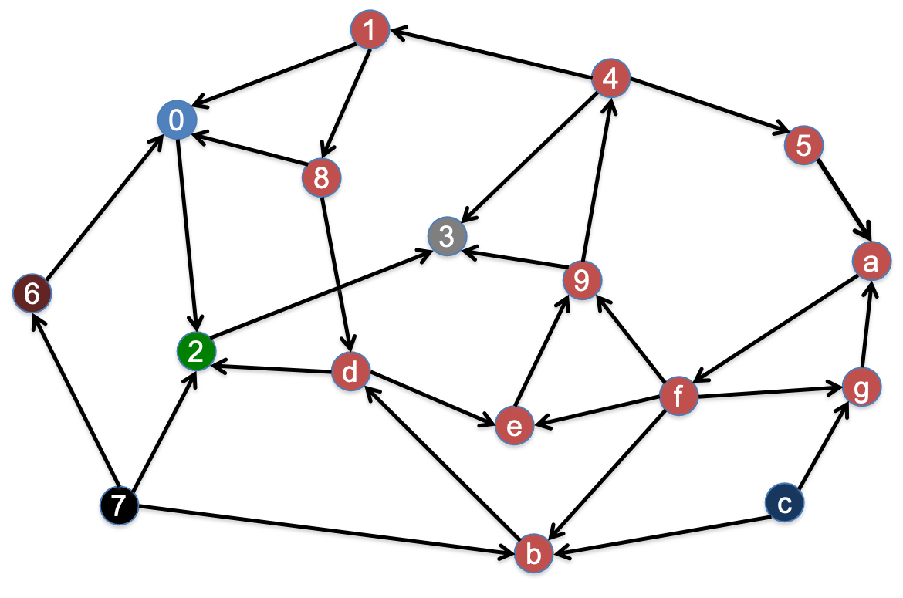
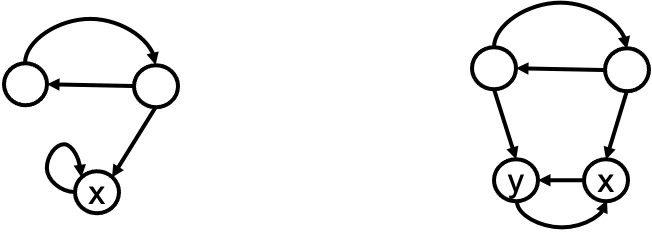

<< 返回本书主页<< Back to the afterword page
Jan. 2022
9 社会网络中的影响力与共识9.1 背景问题有向图的性质“重要性”评估：PageRank社会共识的形成：DeGroot Consensus9.2 计算实践：网络中影响力与共识的关系 9.2.1 作业描述与算法思路9.2.2 编程实现与要点说明
我们可以用有向图表示一个节点对其他节点的认同，有向边
方向性的存在意味着一系列新的性质：
| 无向图 | 有向图 | |
|---|---|---|
| 如果 | 对 | 错 |
强连通图指的是满足如下条件的节点子集及其节点之间的边构成的子图
若一个节点与任何其他节点都没有双向路径，则它自己构成一个强连通分量。
例如，下面这个有向图存在

根据定义，可以通过广度优先搜索（BFS，见第三讲）找出有向图中的强连通分量：先用BFS找出节点
有向边意味着“认同”关系，入度越高的节点，观点越受社会网络中的其他人重视，重要性越高。为了进一步利用有向图来评估每一节点的重要性，我们设置如下的操作化条件：
由于不同节点的价值之间相互关联和影响（“被认可”体现的价值与“推荐人”的价值成正比），我们可以解方程来求解，也可以设每一节点的初始价值为
基本更新算法无法合理处理某些特殊情况。例如吸血鬼节点：一个节点总是只指向自己、只把认同价值分给自己，与此同时吸收其他节点的认同价值（下方左图的节点

克服这种挑战的措施就是在迭代过程的每一轮，都做“同比缩减，等量补偿”——类比按收入的统一百分比交税，然后发等量救济款。每个节点得以平等地保有一些价值，避免了网络中的认同价值被少数几个吸血鬼节点吸纳。用一个占比因子
有向边意味着“认同”关系，如果节点
社会共识形成的算法迭代进行观点的更新。对于已稳定下来的情况，直观上我们会认为，社会共识与每个节点的影响力或PageRank有关系，共识应当接近影响力大的人的观点。
具体地，用向量
这一理论能在数学上得到证明。本次作业是在一个例子模型中编程验证这一理论：
PageRank算法中价值的更新和DeGroot算法中观点的更新，都涉及矩阵向量乘法。以如下的认同有向图
PageRank算法中更新节点价值时，由于一条认同边的价值与“推荐人”的推荐数成反比，我们要先对矩阵行做归一化，每一行总和值为
第
把
在DeGroot算法中，每个节点更新自己的观点时，要把自己认同的人的观点做加权平均，这也意味着我们需要把矩阵
把
迭代进行以上两个矩阵向量乘法，直到稳定。
首先仍然是读取有向图文件，存储在矩阵A里，读取初始观点向量，存储在向量S里。具体代码省略，参见1.2.1.2。我使用的数据文件如下：
xxxxxxxxxx241>>> 请输入有向图邻接矩阵文件名称（e.g. net1.dat, net2.dat）：net2.dat2>>> 有向图：3>>> [[0 1 0 1 0 0 1 0 0 0 0 1 1 0 0 0 0 0 0 0]4>>> [0 0 0 1 0 0 0 0 0 0 0 1 0 0 1 0 0 0 0 0]5>>> [0 0 0 0 0 0 0 0 1 0 0 0 0 0 0 0 1 0 0 0]6>>> [1 0 0 0 0 0 0 0 1 1 0 0 0 0 0 0 1 0 0 0]7>>> [0 0 0 0 0 0 0 0 0 1 0 0 0 0 0 1 0 0 0 0]8>>> [0 0 0 0 0 0 0 0 1 0 0 0 0 0 0 0 0 0 0 0]9>>> [0 1 1 0 0 0 0 0 0 0 0 0 0 0 0 0 0 0 0 0]10>>> [1 1 0 0 0 0 0 0 0 1 1 0 0 0 0 0 0 0 0 0]11>>> [0 0 0 0 1 0 1 0 0 0 0 0 0 1 0 0 0 0 0 1]12>>> [1 0 1 0 0 0 0 0 0 0 0 0 0 0 0 0 0 1 1 0]13>>> [0 0 0 0 0 0 1 0 0 1 0 0 1 0 0 0 0 1 0 0]14>>> [1 0 0 0 0 0 0 0 0 1 1 0 1 0 0 0 0 0 0 0]15>>> [0 0 1 0 0 0 0 0 0 0 0 1 0 0 0 0 0 0 0 0]16>>> [0 0 0 0 0 0 0 0 0 0 0 0 0 0 0 0 1 0 0 0]17>>> [0 0 0 1 0 0 0 0 0 0 1 0 0 0 0 0 0 1 1 0]18>>> [0 0 0 0 0 1 0 0 1 0 0 0 0 0 0 0 0 0 0 0]19>>> [0 0 0 1 0 0 0 0 1 0 0 0 0 0 0 1 0 1 0 1]20>>> [0 0 0 0 1 0 0 0 0 0 0 0 0 0 0 1 0 0 0 0]21>>> [0 1 0 0 0 0 0 1 0 1 0 0 1 0 0 0 0 0 0 0]22>>> [0 0 0 0 0 0 0 0 0 0 0 0 0 0 0 1 0 0 0 0]]23>>> 请输入认识初值向量文件名称（e.g. s1.dat, s2.dat）：s2.dat24>>> 初始观点向量：[ 5 32 2 4 5 10 21 3 2 6 8 3 1 9 23 45 2 3 9 11]
接着，我们来标准化矩阵，存储为A_sd。
xxxxxxxxxx51A_sd = np.zeros((ny,nx))2for i in range(ny):3 row = A[i]4 recognition_sum = np.sum(row)5 A_sd[i] = row / recognition_sum迭代计算DeGroot共识。如前所述，我们应该转置S，再把A_sd和它做点乘。但是，为了书写的简便（主要是便于后面计算PageRank时书写方便），我没有转置S，而是转置了A_sd、得到A_trans，并且把向量S放在了左边、矩阵A_trans放在了右边。这样计算得到的结果是一样的。不过，严格按照数学中矩阵向量乘法的规定，还是应该如上操作。
xxxxxxxxxx21A_trans = np.transpose(A_sd)2S_initial = np.copy(S)在每一轮，我们点乘S_original和A_trans，得到新的观点结果S。
xxxxxxxxxx51cnt = 02while True:3 cnt += 14 S_original = np.copy(S)5 S = np.dot(S, A_trans)比较更新前后的观点向量，如果每一维度的值前三位小数不发生变化，我们就认为观点的迭代更新达成了稳定。
xxxxxxxxxx111 flag = True2 for i in range(n):3 s_original = '%.3f' % S_original[i]4 s = '%.3f' % S[i]5 if s_original != s:6 flag = False7 if flag == True:8 break9S_output = ['%.3f' % s for s in S]10print('*** DeGroot 共识结果：')11print(np.array(S_output))xxxxxxxxxx21>>> *** DeGroot 共识结果：2>>> ['11.858' '11.858' '11.858' '11.858' '11.858' '11.858' '11.858' '11.858' '11.858' '11.858' '11.858' '11.858' '11.858' '11.858' '11.858' '11.858' '11.858' '11.858' '11.858' '11.858']
迭代计算PageRank。如前所述，我们应该转置A_sd和V，再把二者做点乘。但是，为了书写的简便，我没有做转置，而是把向量V放在了左边、矩阵A_sd放在了右边做点乘。
xxxxxxxxxx61V = np.array([1/n for i in range(n)])2cnt = 03while True:4 cnt += 15 V_original = np.copy(V)6 V = np.dot(V, A_sd)比较更新前后的价值向量，如果每一维度的值前五位小数不发生变化，我们就认为价值的迭代更新达成了稳定。之所以两次判定稳定所取的小数位数不同，是因为，小数位数相同时，价值向量的有效位数比观点向量更少。
xxxxxxxxxx111 flag = True2 for i in range(n):3 v_original = '%.5f' % V_original[i]4 v = '%.5f' % V[i]5 if v_original != v:6 flag = False7 if flag == True:8 break9print('*** PageRank: ')10V_output = ['%.3f' % v for v in V]11print(np.array(V_output))xxxxxxxxxx21>>> *** PageRank:2>>> ['0.032' '0.038' '0.051' '0.038' '0.061' '0.062' '0.053' '0.004' '0.174' '0.056' '0.012' '0.030' '0.021' '0.043' '0.013' '0.123' '0.078' '0.036' '0.017' '0.059']
最后，我们使用PageRank对初始观点加权求和np.dot(V,S_initial)：
xxxxxxxxxx21consensus = np.dot(V,S_initial)2print('*** PageRank 加权初值求和结果：%.3f' % consensus)xxxxxxxxxx11>>> *** PageRank 加权初值求和结果：11.858
基于PageRank算法得到的社会共识与DeGroot共识一致，本作业的理论假设得到了检验。